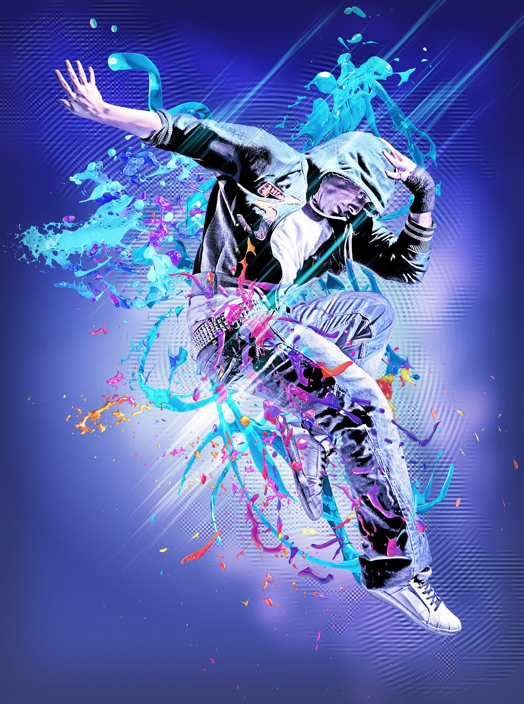

As the humans evolved the dance form has also evolved with them and passed down from generation to generation. Dance form displays the tradition, culture and symbolism. Initially, the dances are performed during ceremonies only but slowly we adapted this dance form to our social gatherings also. Now the meaning and styles of dancing have changed, there are two distinct forms of dance- social and theatrical. Participatory dance also known as Social dance is where dancing in a group or groups is encouraged. These type of dances are most commonly found at weddings, social gatherings, and festivals, and they can be enjoyed with folk music both alone or in a group. Whereas theatrical dance is where dancers perform on a stage in front of an audience. It can also be a solo as well as group performance.
Since the early days, different dances have changed, merged and evolved into what we know today as the most well-known dance genres. Dance styles have many different forms, each form with its own set of techniques or skills, music and style. It is taken into practice by many dancers to start out taking several different dance classes, learning an overview of a handful of types of dance before specializing in one area, as they get older.
Contemporary Dance:
Contemporary dance was developed during the mid-twentieth century and since that time it has grown to become one of the dominant genres of dance performances for formally trained dancers throughout the world. It is a highly complicated type of performance dance. Contemporary dance is all about connecting the mind and the body through its complicated dance movements. It is typically done barefoot. Although the elements in this dance form is incorporated from ballet, jazz, modern, lyrical and various different dance styles it is different from all those techniques. In terms of its technique, contemporary dance usually tends to combine the strong but controlled legwork of ballet, it also stresses on torso which is incorporated from modern style. It also includes floor work, fall and recovery, contract- release, and improvisation characteristics of modern dance. Most of the times contemporary dance incorporates elements of non-western dance cultures, such as bent knees which is taken from African dance form. It also incorporates movements from Butoh which is the Japanese contemporary dance. Also it’s focus on unpredictability, non-standardized costumes, disordered choreography, multiple and simultaneous actions, improvisation, and sets and lighting has pushed this dance form into the forefront of modern art dance scene.
Ballet:
Ballet is one of the most popular dance genres in the world. Ballet is a type of performance dance. It is originated in the fifteenth century during the Italian Renaissance later developed as a concert dance in France and Russia. Ballet dancers are known for their grace, athleticism and flexibility. This style of dance is used to tell a story usually an imaginary one. Ballets are classified as, classical ballet, neoclassical ballet, romantic ballet and contemporary ballet. As it relies heavily on technique, an enormous amount of diligence and dedication is required to perfect it. Ballet is typically danced to classical music and is done wearing slippers or pointed shoes. There are six widely used, methods to teach or study ballet. These methods are the French School, the Cecchetti Method, the Royal Academy of Dance method (English style), the Vaganova Method, the Bournonville method, and the Balanchine method (American style). All of these methods are internationally recognized.

Hip Hop:
Hip Hop refers to a street dance style originated in the streets of New York in the 1970s. It is performed on hip hop music and from this a new culture is evolved called hip hop culture. The main catalyst behind the evolution and popularity of this culture is the television and media. Many movies and series have introduced this culture to the world. Hip Hop is different than other dance form as hip- Hop is freestyle in nature that is it can be improvised any time, improvisation plays a very good role in the popularity of hip hop and hip-hop dance crews often engage in freestyle dance competitions—colloquially referred to as "battles". The terminologies or identifiers of this dance form are Crews, freestyling, and battles. Hip-hop dance can be considered as a form of entertainment or hobby. Main styles of this dance form include Breaking, Locking and Popping. There are many derivatives of hip- hop such as Memphis Jookin', Turfing, Jerkin' and Krumping.
Ballroom:
Ballroom dance originated in the early 20th century, it is a type of social dance. This dance form is practised with a partner generally a man and a woman. Most of the times the man is the lead and the woman is the follow. In the early days this dance form is practised by the bureaucrats or the people of high stature. Sometimes ballroom dance is referred to as dance sport. Smooth dances and Latin dances are the two categories in which ballroom dances can be divided. There are many popular types of ballroom dances including the samba, cha cha cha, foxtrot, jive, lindy hop, mambo, paso doble, quickstep, rumba, tango, Vietnamese waltz, and the waltz. Out of these foxtrot, waltz and Viennese waltz are smooth or standard ballroom dance forms and rumba, samba and chacha (or chachacha) are latin or rhythm style dance form.
Folk Dance:
Folk dance is also known as traditional or ethnic dances. All the dance form can be considered as folk dance as they have originated from somewhere. Some folk dance have found their places in the world and some are still being passed down from one generation to another. Folk dances represent ethnic history of people who live in a certain region or country, cultural heritage, reflections of daily life of people. This dance form ia usually performed at dance gatherings with the accompaniment of traditional music of that particular region. Some of the folk dance of India includes Bharatanatyam, Kathak and Odissi, while Bhangra and Bollywood are more current popular Indian dance forms. Jazz and tap dance which are known and performed globally are both types of folk dance from the USA. Argentine tango which also comes under ballroom and social dance is a folk dance of central and south America. Mexico has its own folk dances, such as the Jarabe Tapatío and Danza del Venado. Irish dancing is sometimes performed in Irish soft shoes called ‘gillies’. The ethnic dance form of Egypt is belly dance, which also is one of the world famous dance form.
Wanna reach out to us?